记录所有资产、镜头、项目资源等
任务管理平台，可完成基础的任务分配、记录、任务反馈等， 可添加任意列存储特定数据，可关联同步shotgrid、cgt等
DCC软件后台任务调度平台（运行dcc软件的命令行版本）
镜头组装 批量输出镜头缓存(abc、usd等)、组装材质、毛发等， 自动构建下游所需文件
自定义 特定任务， 频繁重复性任务等， 可通过自定义右键或者扩展快速集成
任务数据可视化
内置python，可快速访问内部api接口、调试功能、特定需求灵活扩展
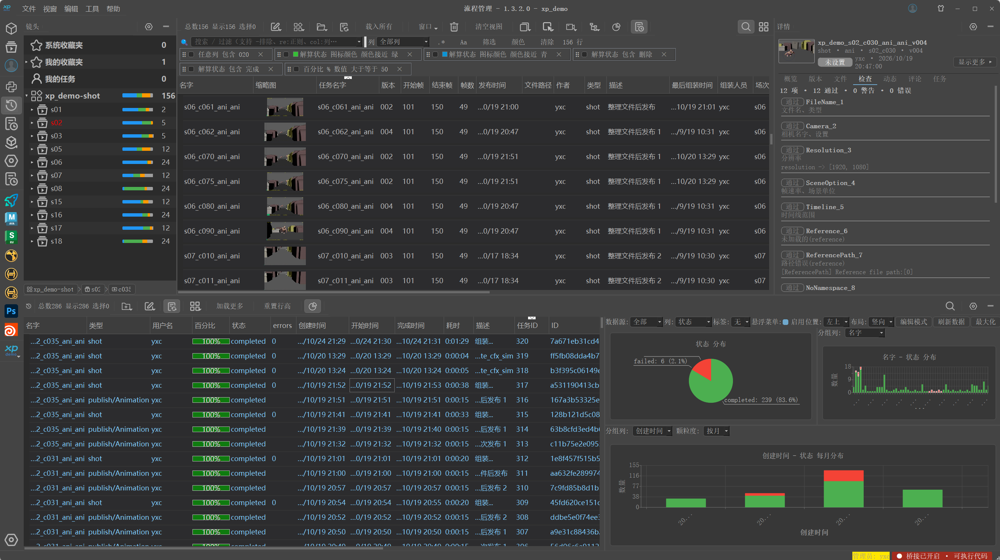
自定义功能 可方便的扩展、实现特定功能 (如：定制在不同DCC、不同项目中的具体功能)
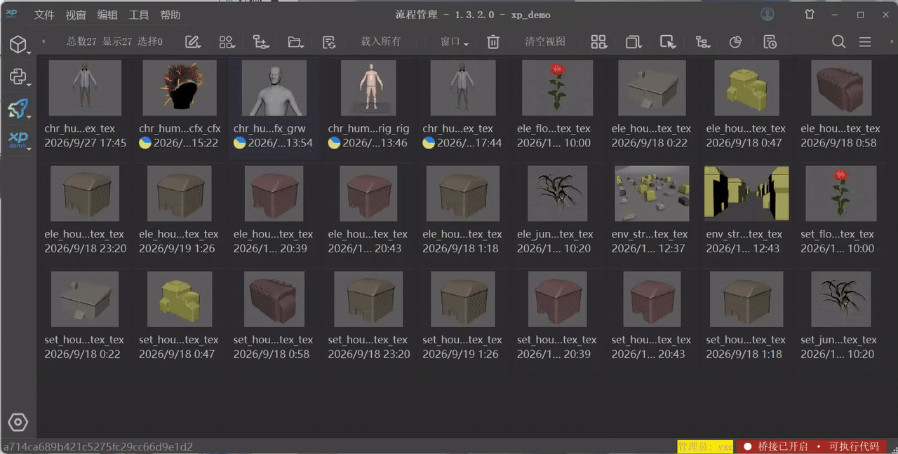
自定义列 可任意添加列、为列定制特定行为（显示类型、数据类型等）
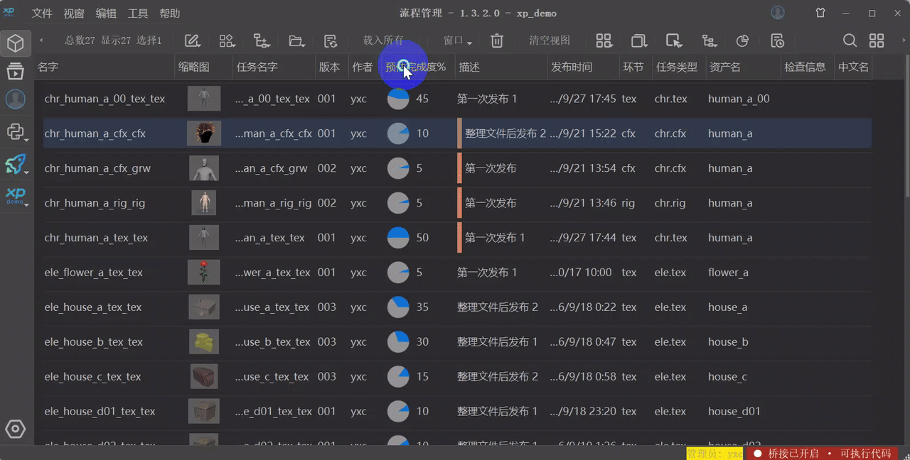
可集成到maya、nuke、houdini、RV等， 在不同dcc中可以方便的定制针对性功能
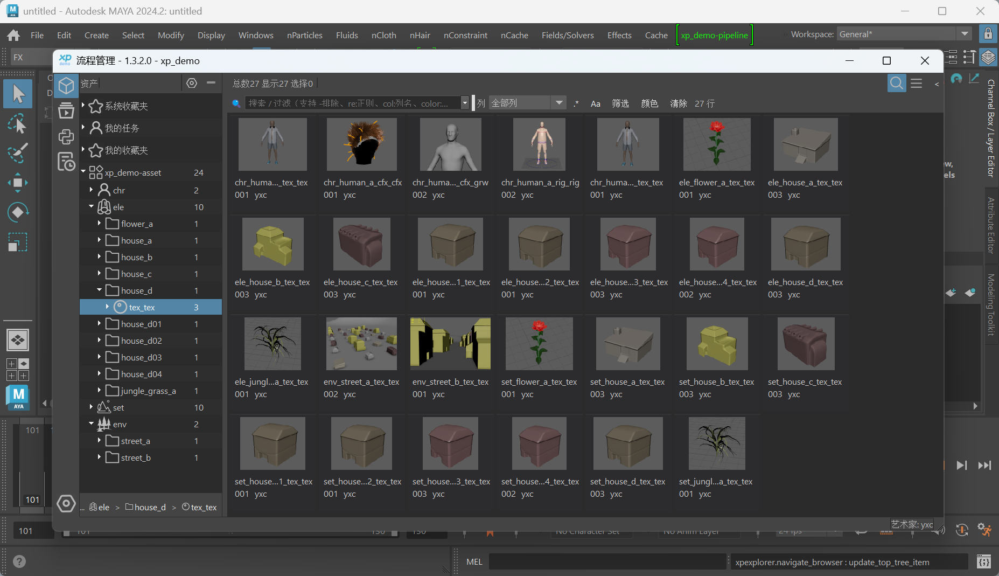
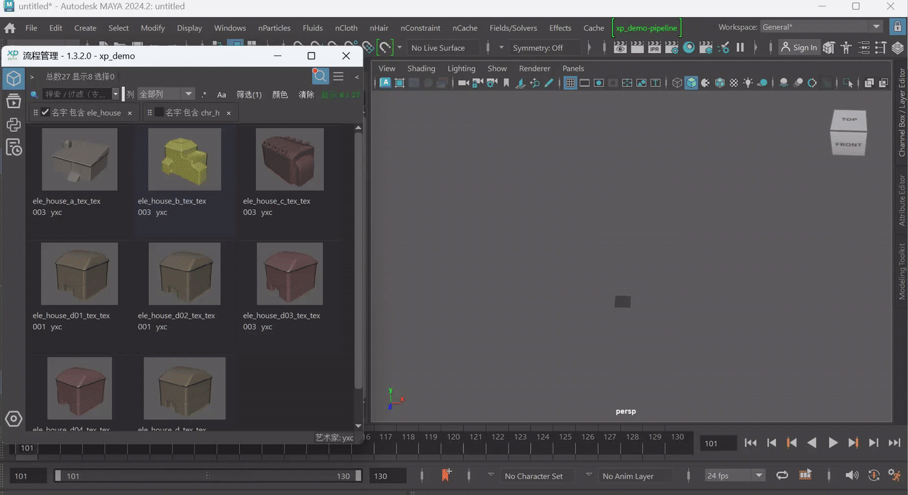
可快速根据上游环节发布的信息、组装输出的文件（abc、usd等），构建基础特效镜头文件
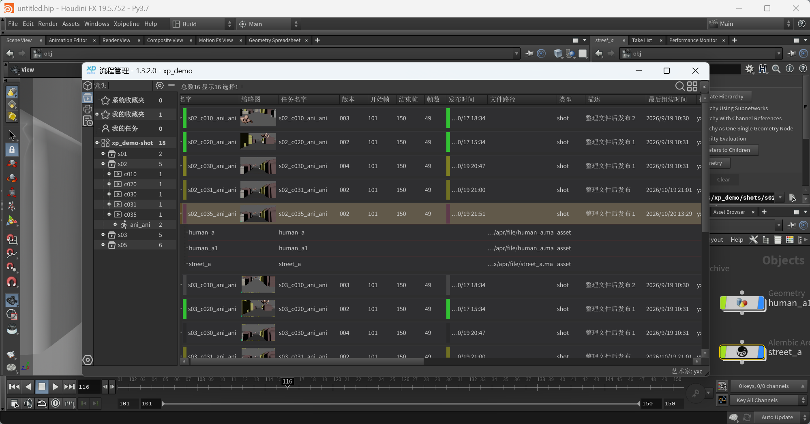
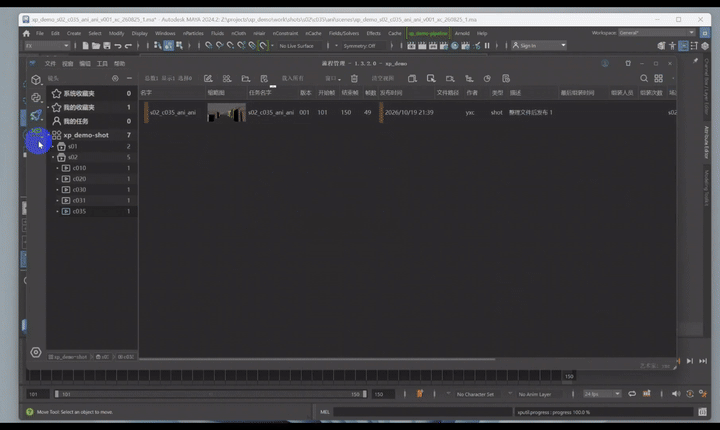
资产发布
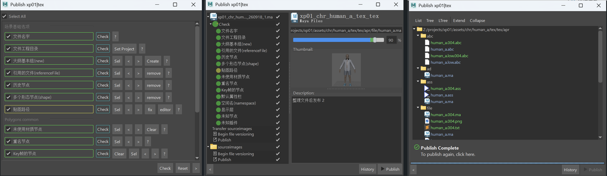
环节文件发布提交， 各环节界面基础结构一样
以下是七八年前rig方面的工作和开发
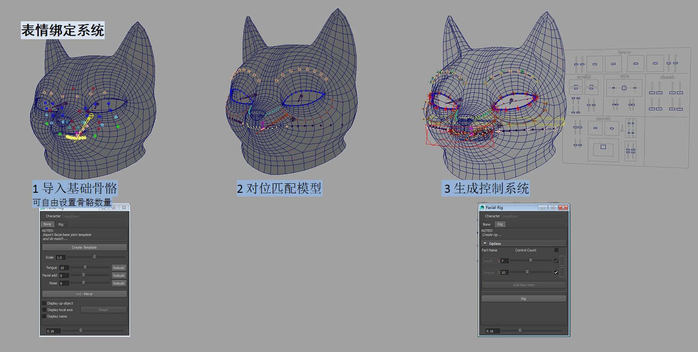
表情修型（表情pose细化，类似maya2017的shapeEditor功能），在基础骨骼蒙皮无法达到的细节效果上，通过blendShape修型加以细化，配合控制面板的驱动，每个表情pose都可以自由控制
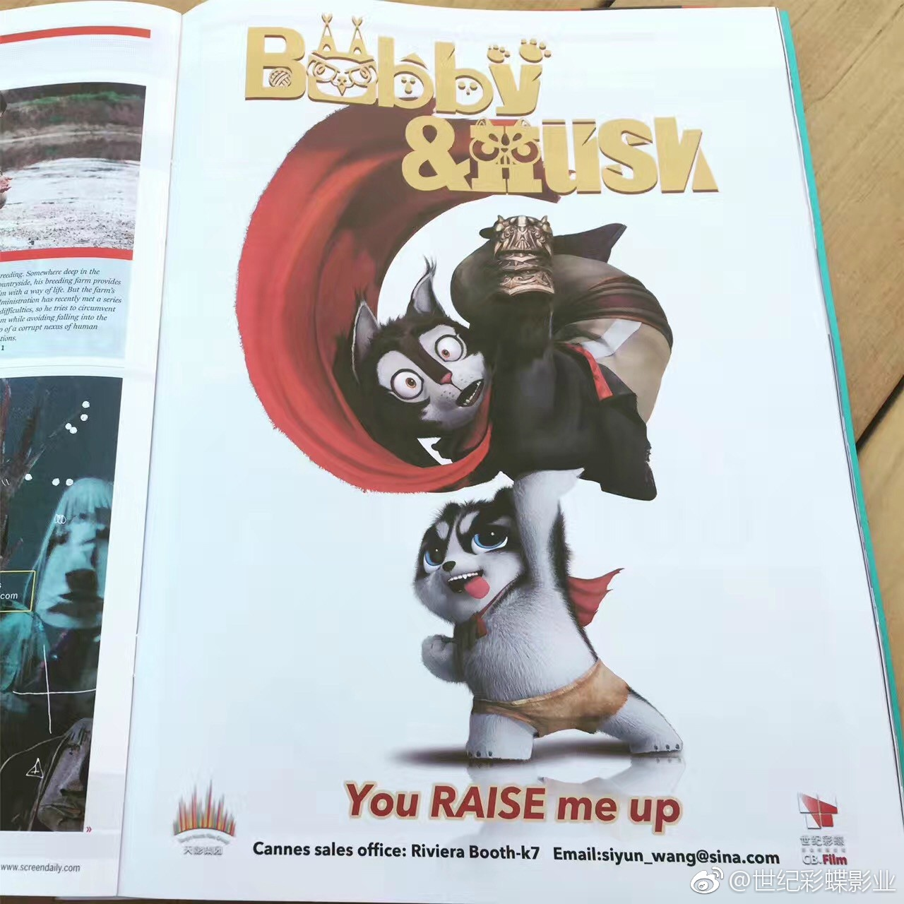
身体骨架及肌肉变形控制构建，绿色的方片用于制作肌肉抖动控制
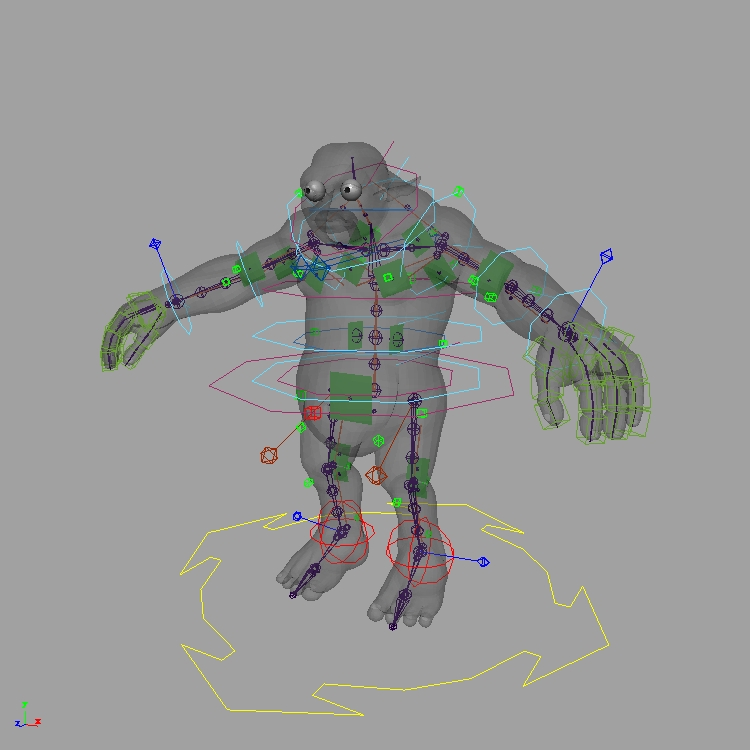
模块化身体绑定， 身体组建可灵活组合，twist骨骼数量无限制，使用项目兔侠传奇2及新开发项目